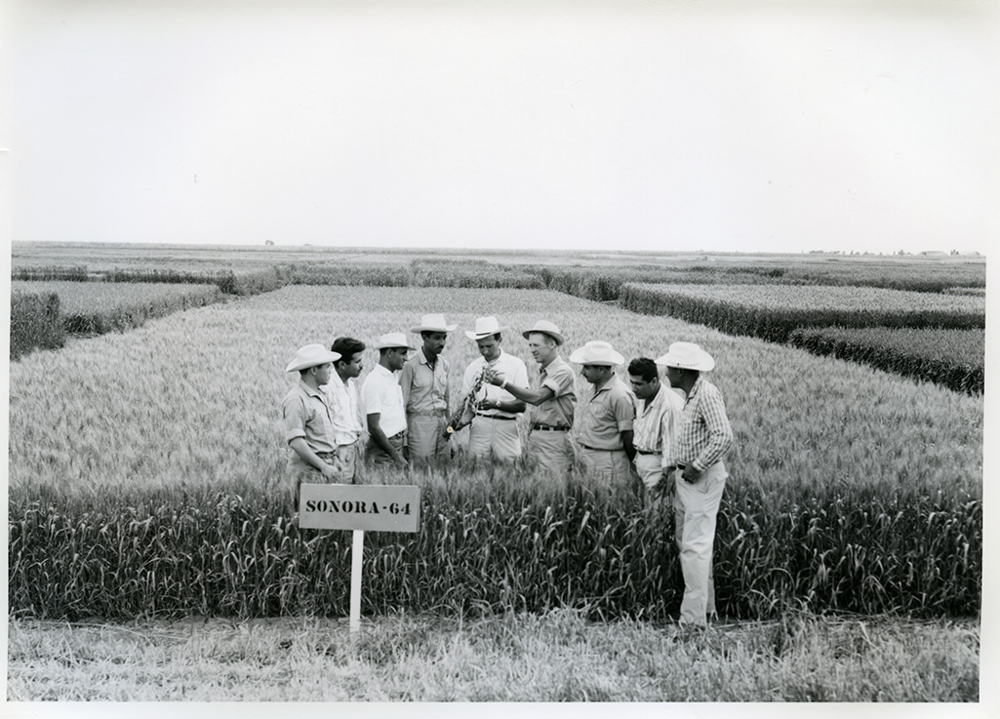

Tribute to Dr. Norman Borlaug

Dr. Norman Borlaug, known as the father of the Green Revolution.
Dr. Norman Borlaug was an American agronomist, humanitarian, and Nobel laureate credited with saving over a billion people from starvation through his work in developing high-yielding crop varieties and sustainable farming practices.